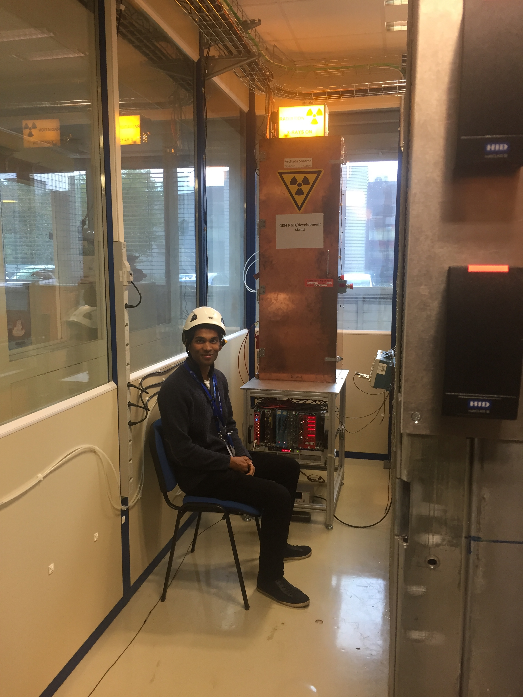
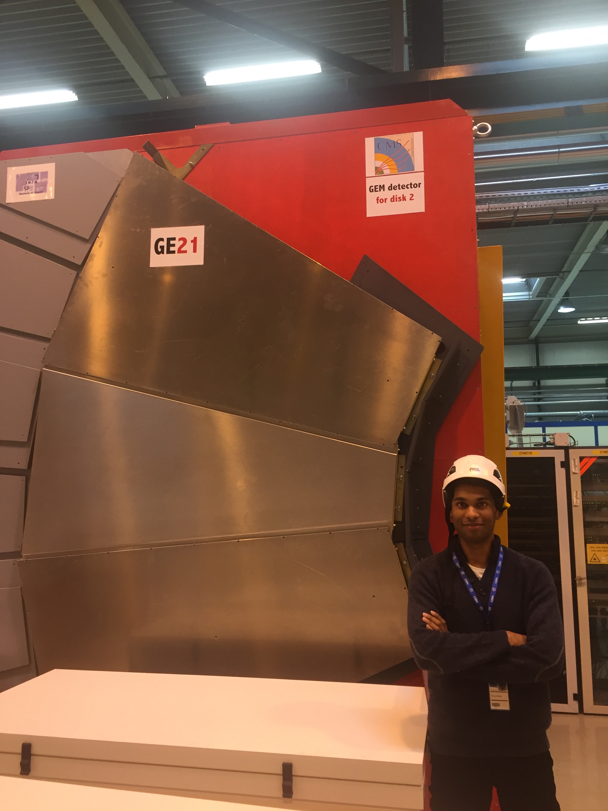
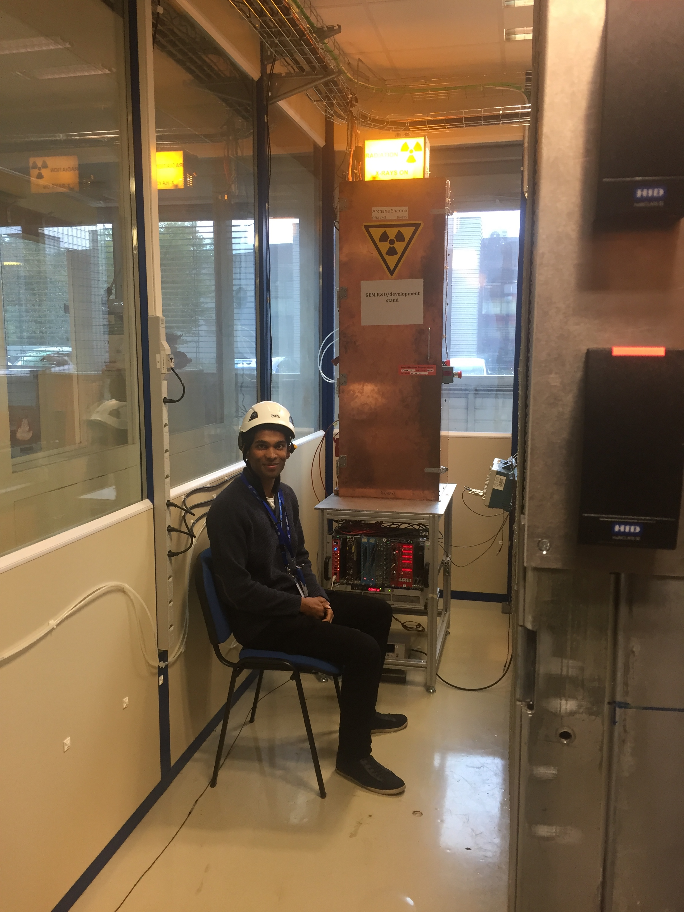
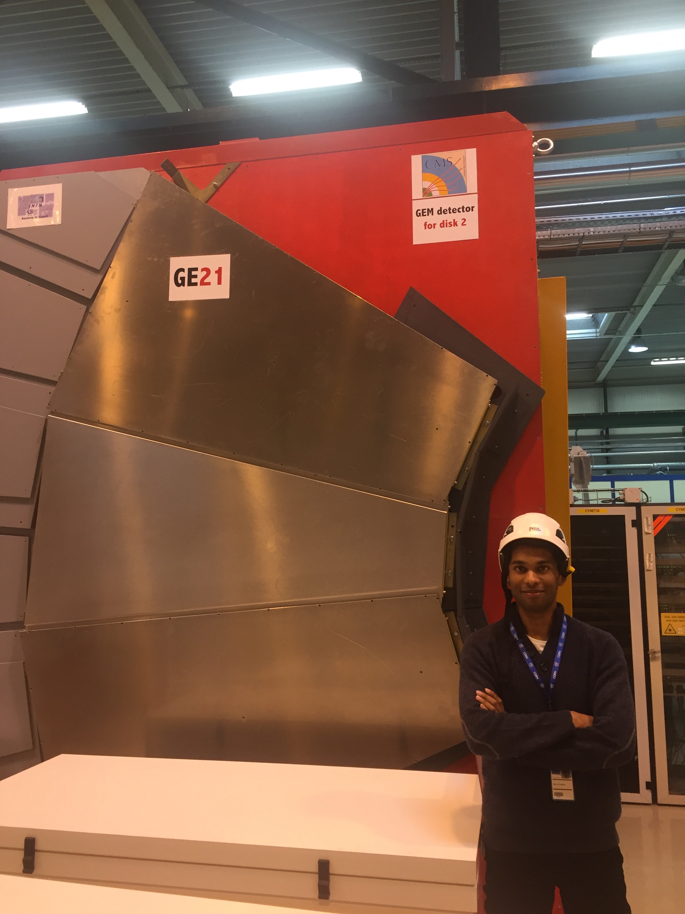
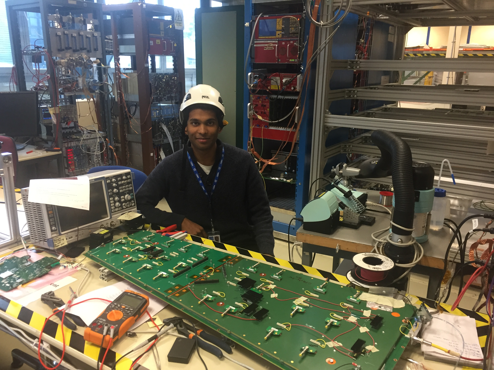

CERN, CMS Experiment
Summer 2017
I worked at CERN for three months, at the CMS Experiment lab, working specifically on the 'CMS-GEM' collaboration, which involved changing particle detector’s technology to Gas Electron Multiplier (GEMs).
My role was being involved in the final quality control to check if the detector’s hardware was functioning appropriately, by having python code run through its triggers, and then improving the software used for these tests by adding new functionalities to the codebase, and changing basic configurations of the detectors, which would allow them behave in different ways under different electrical conditions.
Software development:
Implemented requested features on an existing central code repository, relating to GEM detector’s hardware, using Python scripts, and tested them on a Cosmic Stand (Quality Control Stand 8) while maintaining detailed e-logs of results.
- Improved code used for testing detector in a quality control stand by adding an optional step-size argument feature.
- Created method for configuring detector’s electrical state with custom values by employing a Python dictionary.
- Published real-time gas levels of a mixer by writing C++ script on Visual Studio to collect and send data to a shared server via an API, by employing Cern's
DIPServer documentation. The published data corresponded to the the latest gas levels of a gas mixer using a.txtfile generated fromFlowPlot,FlowViewandFlowDEE2softwares.
Data analysis:
- Installed and learnt Cern’s
ROOTC++/Python CLI framework to understand tree and n-tuple data structures, and used them to plot, fit and cut particles physics events such as collisions and trajectories on histograms. - Analysed data returned from running
latency scansto verify if implemented features were returning expected values.
R&D:
Used a LabVIEW interface connected to a pico-ammeter and radiation stand to get and plot various data relating to irradiated GEM detector foils of various thicknesses in order to observe and understand relationship between X-Ray energies, electrical current, foil properties and the subsequently varying amount of particles detected.
 



